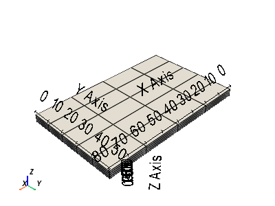
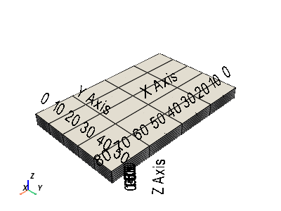

pyvista.ExplicitStructuredGrid#
- class ExplicitStructuredGrid(*args, deep=False, **kwargs)[source]#
Extend the functionality of the
vtk.vtkExplicitStructuredGridclass.Can be initialized by the following:
Creating an empty grid
From a
vtk.vtkExplicitStructuredGridorvtk.vtkUnstructuredGridobjectFrom a VTU or VTK file
From
dimsandcornersarrays
- Parameters:
- args
various See below examples.
- deep
optional Whether to deep copy a
vtk.vtkUnstructuredGridobject. Default isFalse. Keyword only.
- args
Examples
>>> import numpy as np >>> import pyvista as pv >>> >>> # grid size: ni*nj*nk cells; si, sj, sk steps >>> ni, nj, nk = 4, 5, 6 >>> si, sj, sk = 20, 10, 1 >>> >>> # create raw coordinate grid >>> grid_ijk = np.mgrid[:(ni+1)*si:si, :(nj+1)*sj:sj, :(nk+1)*sk:sk] >>> >>> # repeat array along each Cartesian axis for connectivity >>> for axis in range(1, 4): ... grid_ijk = grid_ijk.repeat(2, axis=axis) >>> >>> # slice off unnecessarily doubled edge coordinates >>> grid_ijk = grid_ijk[:, 1:-1, 1:-1, 1:-1] >>> >>> # reorder and reshape to VTK order >>> corners = grid_ijk.transpose().reshape(-1, 3) >>> >>> dims = np.array([ni, nj, nk]) + 1 >>> grid = pv.ExplicitStructuredGrid(dims, corners) >>> grid = grid.compute_connectivity() >>> grid.plot(show_edges=True)
- cast_to_unstructured_grid() UnstructuredGrid[source]#
Cast to an unstructured grid.
- Returns:
UnstructuredGridAn unstructured grid. VTK adds the
'BLOCK_I','BLOCK_J'and'BLOCK_K'cell arrays. These arrays are required to restore the explicit structured grid.
See also
pyvista.DataSetFilters.extract_cellsExtract a subset of a dataset.
pyvista.UnstructuredGrid.cast_to_explicit_structured_gridCast an unstructured grid to an explicit structured grid.
Notes
The ghost cell array is disabled before casting the unstructured grid in order to allow the original structure and attributes data of the explicit structured grid to be restored. If you don’t need to restore the explicit structured grid later or want to extract an unstructured grid from the visible subgrid, use the
extract_cellsfilter and the cell indices where the ghost cell array is0.Examples
>>> from pyvista import examples >>> grid = examples.load_explicit_structured() >>> grid.plot(color='w', show_edges=True, show_bounds=True)
>>> grid = grid.hide_cells(range(80, 120)) >>> grid.plot(color='w', show_edges=True, show_bounds=True)
>>> grid = grid.cast_to_unstructured_grid() >>> grid.plot(color='w', show_edges=True, show_bounds=True)
>>> grid = grid.cast_to_explicit_structured_grid() >>> grid.plot(color='w', show_edges=True, show_bounds=True)
- cell_coords(ind)[source]#
Return the cell structured coordinates.
- Parameters:
- Returns:
tuple(int),numpy.ndarray,orNoneCell structured coordinates.
Noneifindis outside the grid extent.
See also
pyvista.ExplicitStructuredGrid.cell_idReturn the cell ID.
Examples
>>> from pyvista import examples >>> grid = examples.load_explicit_structured() >>> grid.cell_coords(19) (3, 4, 0)
>>> grid.cell_coords((19, 31, 41, 54)) array([[3, 4, 0], [3, 2, 1], [1, 0, 2], [2, 3, 2]])
- cell_id(coords) Optional[Union[int, ndarray]][source]#
Return the cell ID.
- Parameters:
- Returns:
int,numpy.ndarray,orNoneCell IDs.
Noneifcoordsis outside the grid extent.
See also
pyvista.ExplicitStructuredGrid.cell_coordsReturn the cell structured coordinates.
Examples
>>> from pyvista import examples >>> grid = examples.load_explicit_structured() >>> grid.cell_id((3, 4, 0)) 19
>>> coords = [(3, 4, 0), ... (3, 2, 1), ... (1, 0, 2), ... (2, 3, 2)] >>> grid.cell_id(coords) array([19, 31, 41, 54])
- compute_connections(inplace=False)[source]#
Compute an array with the number of connected cell faces.
This method calculates the number of topological cell neighbors connected by faces. The results are stored in the
'number_of_connections'cell array.- Parameters:
- inplacebool,
optional This method is applied to this grid if
Trueor to a copy otherwise.
- inplacebool,
- Returns:
ExplicitStructuredGridA deep copy of this grid if
inplace=Falseor this DataSet if otherwise.
See also
ExplicitStructuredGrid.compute_connectivityCompute the faces connectivity flags array.
Examples
>>> from pyvista import examples >>> grid = examples.load_explicit_structured() >>> grid = grid.compute_connections() >>> grid.plot(show_edges=True)
- compute_connectivity(inplace=False) ExplicitStructuredGrid[source]#
Compute the faces connectivity flags array.
This method checks the faces connectivity of the cells with their topological neighbors. The result is stored in the array of integers
'ConnectivityFlags'. Each value in this array must be interpreted as a binary number, where the digits shows the faces connectivity of a cell with its topological neighbors -Z, +Z, -Y, +Y, -X and +X respectively. For example, a cell with'ConnectivityFlags'equal to27(011011) indicates that this cell is connected by faces with their neighbors(0, 0, 1),(0, -1, 0),(-1, 0, 0)and(1, 0, 0).- Parameters:
- inplacebool,
optional This method is applied to this grid if
True(default) or to a copy otherwise.
- inplacebool,
- Returns:
ExplicitStructuredGridA deep copy of this grid if
inplace=False, or this DataSet if otherwise.
See also
ExplicitStructuredGrid.compute_connectionsCompute an array with the number of connected cell faces.
Examples
>>> from pyvista import examples >>> >>> grid = examples.load_explicit_structured() >>> grid = grid.compute_connectivity() >>> grid.plot(show_edges=True)
- property dimensions: Tuple[int, int, int]#
Return the topological dimensions of the grid.
Examples
>>> from pyvista import examples >>> grid = examples.load_explicit_structured() >>> grid.dimensions (5, 6, 7)
- hide_cells(ind: Sequence[int], inplace=False) ExplicitStructuredGrid[source]#
Hide specific cells.
Hides cells by setting the ghost cell array to
HIDDENCELL.- Parameters:
- Returns:
ExplicitStructuredGridorNoneA deep copy of this grid if
inplace=Falsewith the hidden cells, or this grid with the hidden cells if otherwise.
Examples
>>> from pyvista import examples >>> grid = examples.load_explicit_structured() >>> grid = grid.hide_cells(range(80, 120)) >>> grid.plot(color='w', show_edges=True, show_bounds=True)

- neighbors(ind, rel='connectivity') list[source]#
Return the indices of neighboring cells.
- Parameters:
- ind
intor iterable(int) Cell IDs.
- rel
str,optional Defines the neighborhood relationship. If
'topological', returns the(i-1, j, k),(i+1, j, k),(i, j-1, k),(i, j+1, k),(i, j, k-1)and(i, j, k+1)cells. If'connectivity'(default), returns only the topological neighbors considering faces connectivity. If'geometric', returns the cells in the(i-1, j),(i+1, j),(i,j-1)and(i, j+1)vertical cell groups whose faces intersect.
- ind
- Returns:
Examples
>>> import pyvista as pv >>> from pyvista import examples >>> grid = examples.load_explicit_structured() >>> cell = grid.extract_cells(31) >>> ind = grid.neighbors(31) >>> neighbors = grid.extract_cells(ind) >>> >>> plotter = pv.Plotter() >>> plotter.add_axes() >>> plotter.add_mesh(cell, color='r', show_edges=True) >>> plotter.add_mesh(neighbors, color='w', show_edges=True) >>> plotter.show()
- save(filename, binary=True)[source]#
Save this VTK object to file.
- Parameters:
Notes
VTK adds the
'BLOCK_I','BLOCK_J'and'BLOCK_K'cell arrays. These arrays are required to restore the explicit structured grid.Examples
>>> import pyvista as pv >>> from pyvista import examples >>> grid = examples.load_explicit_structured() >>> grid = grid.hide_cells(range(80, 120)) >>> grid.save('grid.vtu')
>>> grid = pv.ExplicitStructuredGrid('grid.vtu') >>> grid.plot(color='w', show_edges=True, show_bounds=True)
>>> grid.show_cells() >>> grid.plot(color='w', show_edges=True, show_bounds=True)
- show_cells(inplace=False) ExplicitStructuredGrid[source]#
Show hidden cells.
Shows hidden cells by setting the ghost cell array to
0whereHIDDENCELL.- Parameters:
- inplacebool,
optional This method is applied to this grid if
True(default) or to a copy otherwise.
- inplacebool,
- Returns:
ExplicitStructuredGridA deep copy of this grid if
inplace=Falsewith the hidden cells shown. Otherwise, this dataset with the shown cells.
Examples
>>> from pyvista import examples >>> grid = examples.load_explicit_structured() >>> grid = grid.hide_cells(range(80, 120)) >>> grid.plot(color='w', show_edges=True, show_bounds=True)
 >>> grid = grid.show_cells() >>> grid.plot(color='w', show_edges=True, show_bounds=True)

- property visible_bounds: Tuple[float, float, float, float, float, float]#
Return the bounding box of the visible cells.
Different from bounds, which returns the bounding box of the complete grid, this method returns the bounding box of the visible cells, where the ghost cell array is not
HIDDENCELL.Examples
>>> from pyvista import examples >>> grid = examples.load_explicit_structured() >>> grid = grid.hide_cells(range(80, 120)) >>> grid.bounds [0.0, 80.0, 0.0, 50.0, 0.0, 6.0]
>>> grid.visible_bounds [0.0, 80.0, 0.0, 50.0, 0.0, 4.0]